Are you
Ready to Clock in?!
Your inbox already has a client waiting. Let's see if
you can fix their UI!
EyeCon — a thesis project on gamified UI accessibility training.
Team
Guided by Ms. Kyle Danes Navarro
Who we are
A thesis made by four friends who believe good design should be accessible to everyone, without the worry that something is wrong.
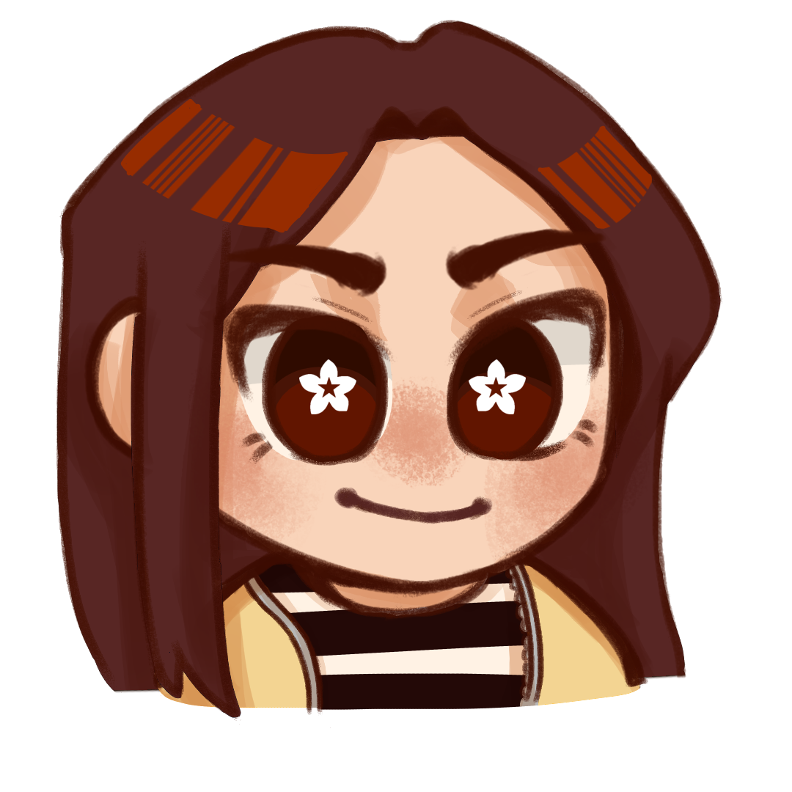
Nica
Artist
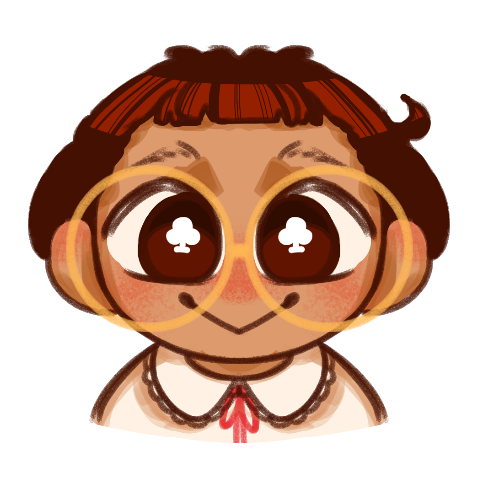
Nadine
Artist
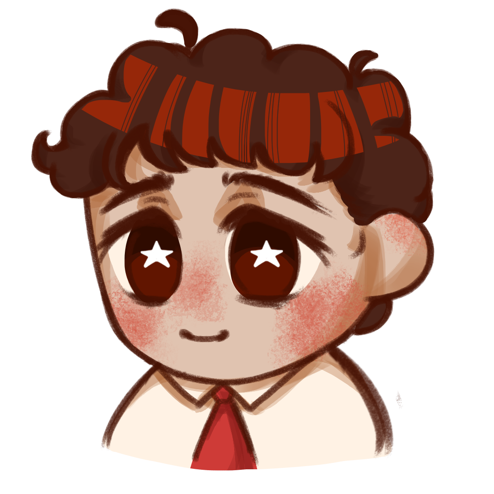
Kryu
Programmer
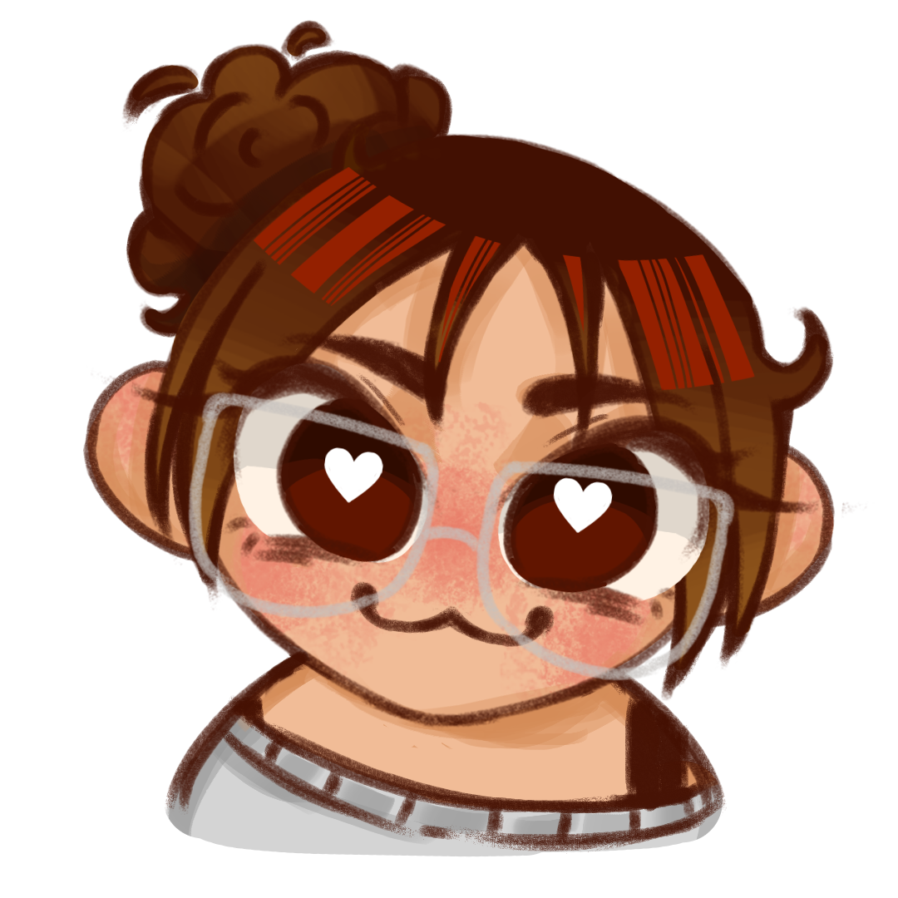
Awi
The Brain
Objectives
Why we made it
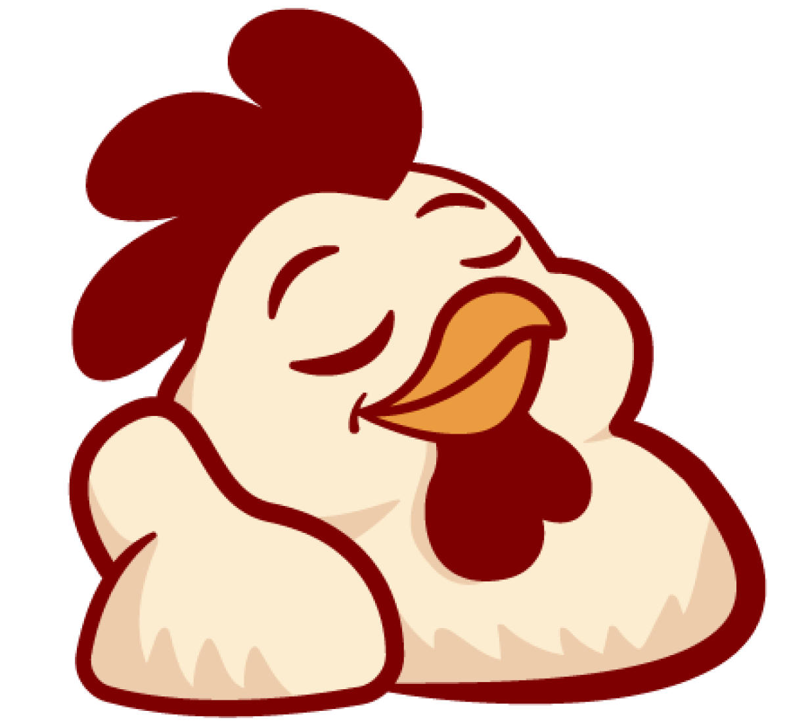
Most people never notice user interface design. They rarely think about where a button sits or what color a line of text is. Yet these small choices decide whether a website can actually meet a person's needs.
While EyeCon does not cover every WCAG 2.2 guideline, it introduces the core principles of alignment, contrast, and typography as a foundation for inclusive interfaces. And that's where good design starts.
Trailer
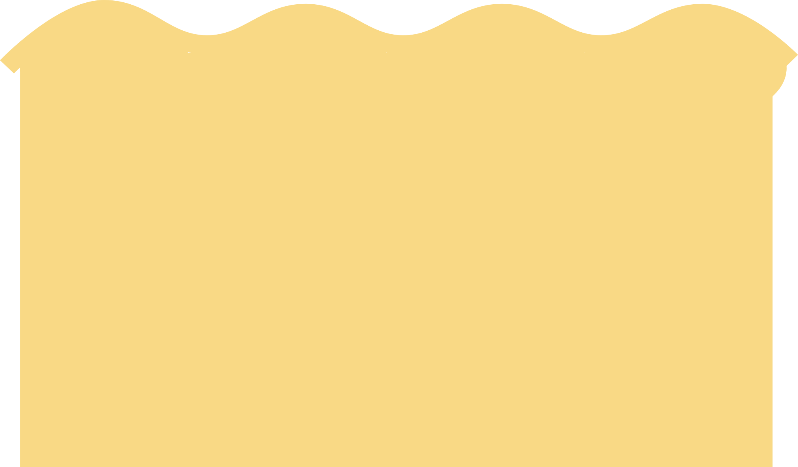
About
So what is EyeCon?
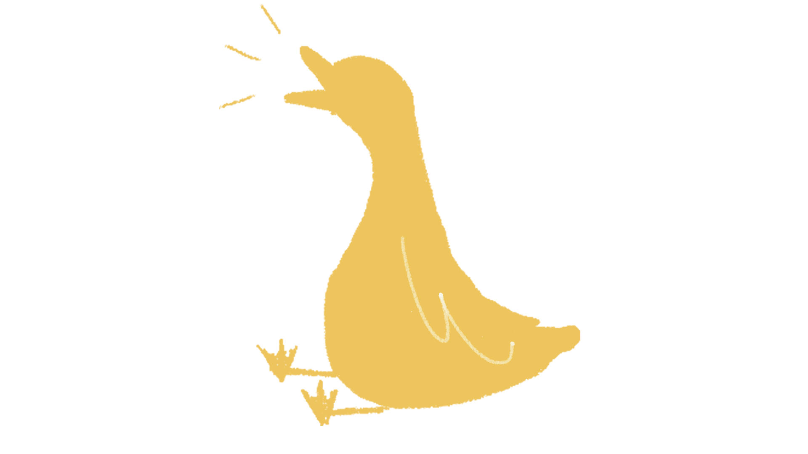
EyeCon is an interactive 2D web-based simulation game for enhancing visual interface standards and accessibility literacy.
You play as a junior UI designer who fixes broken interfaces for clients, from a personal portfolio to a mock-up of a Philippine government website.
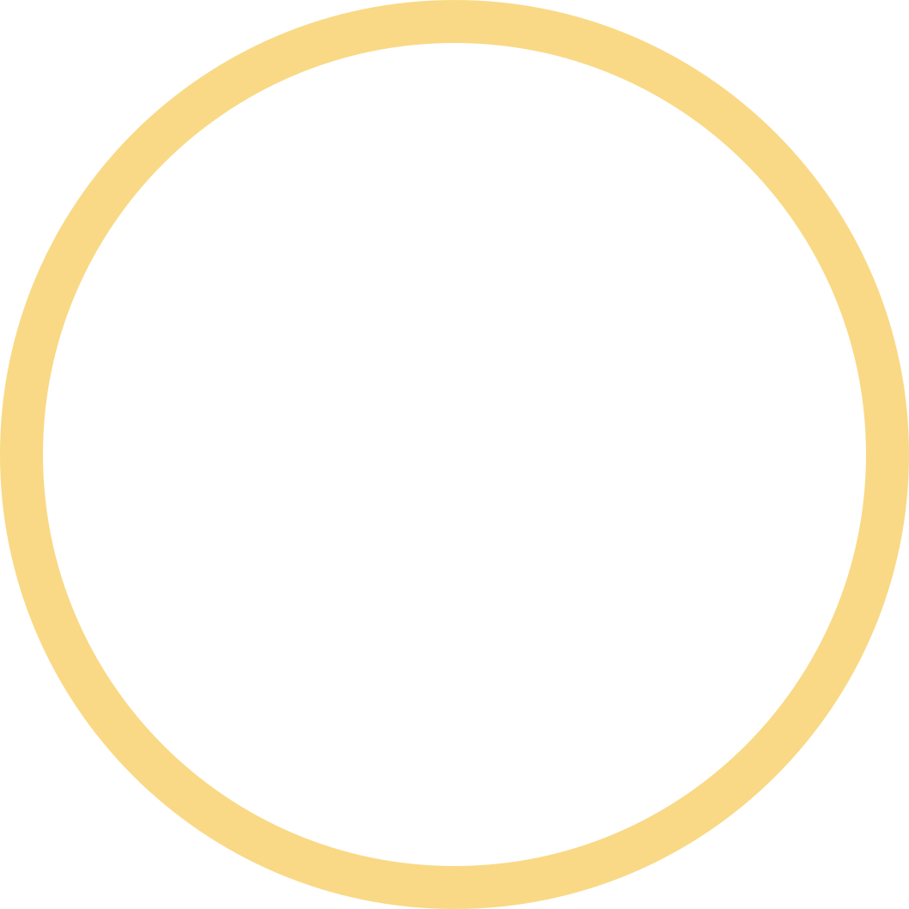
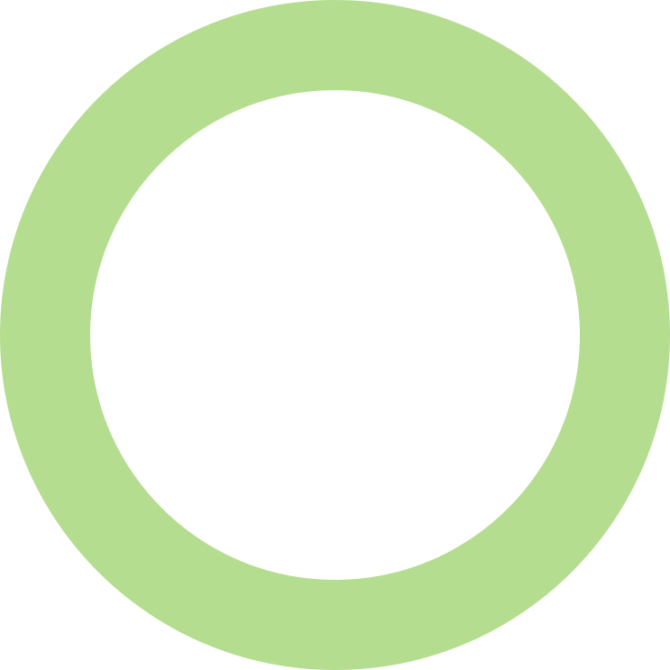
Ready to start your shift?
Welcome to
your studio.
Time to clock in!
There's mail in your inbox and a client waiting for a fix.
Pick up a commission, try your ideas,
and make the screen work for everyone.
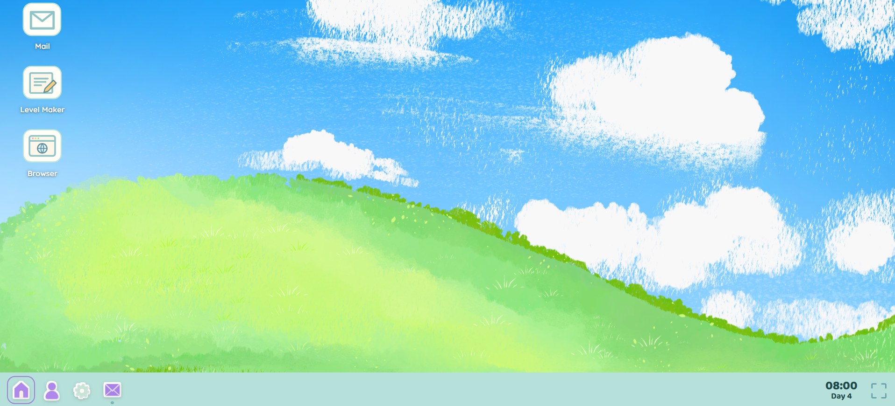
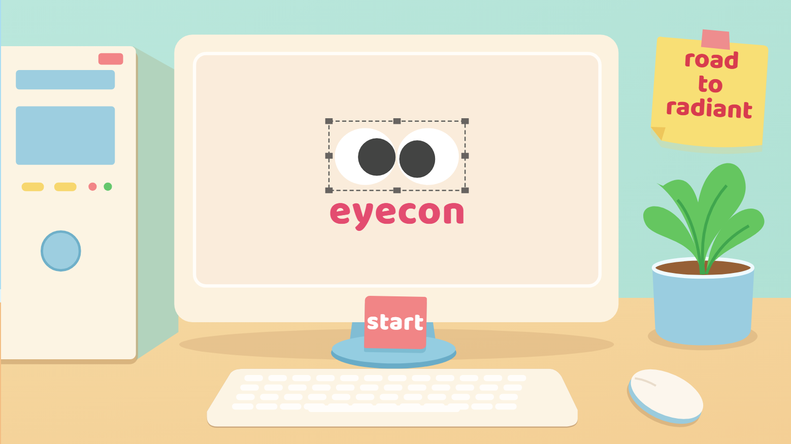